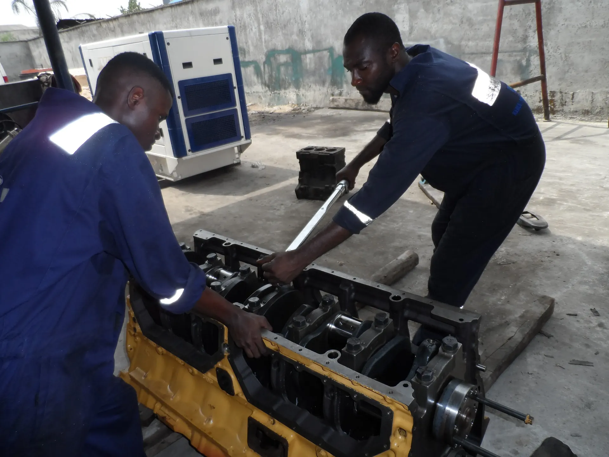
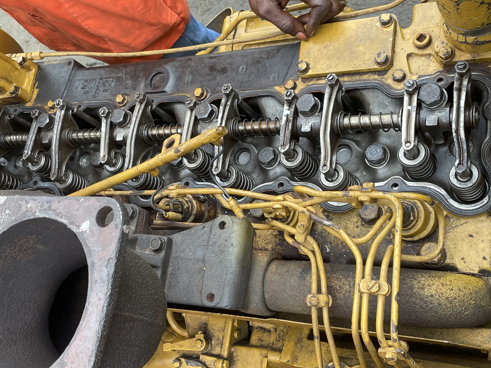
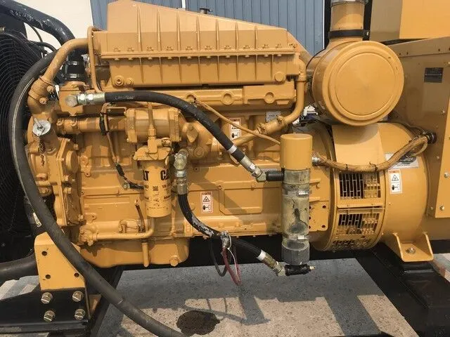
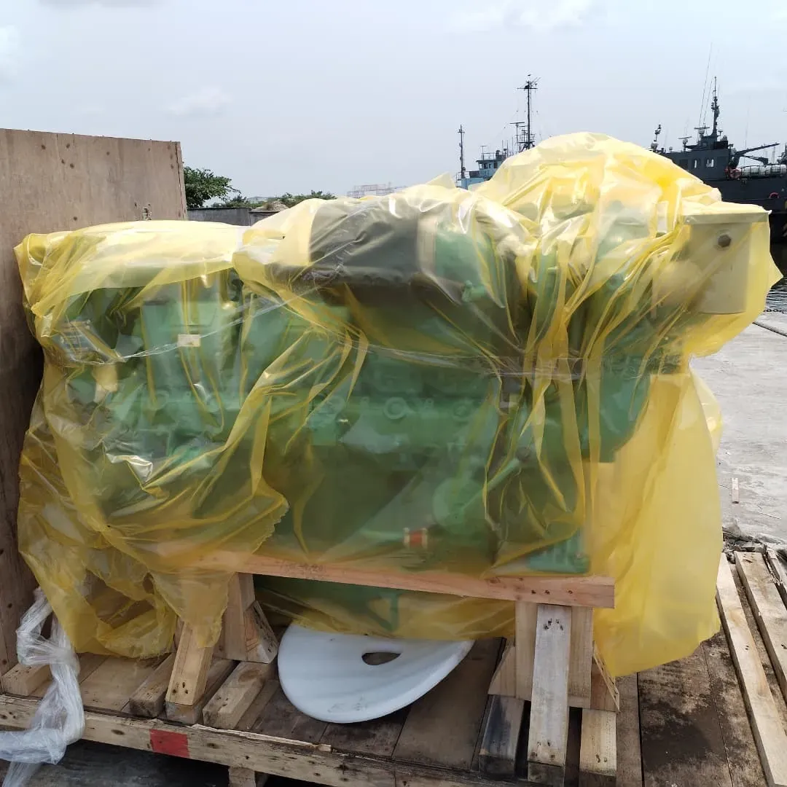
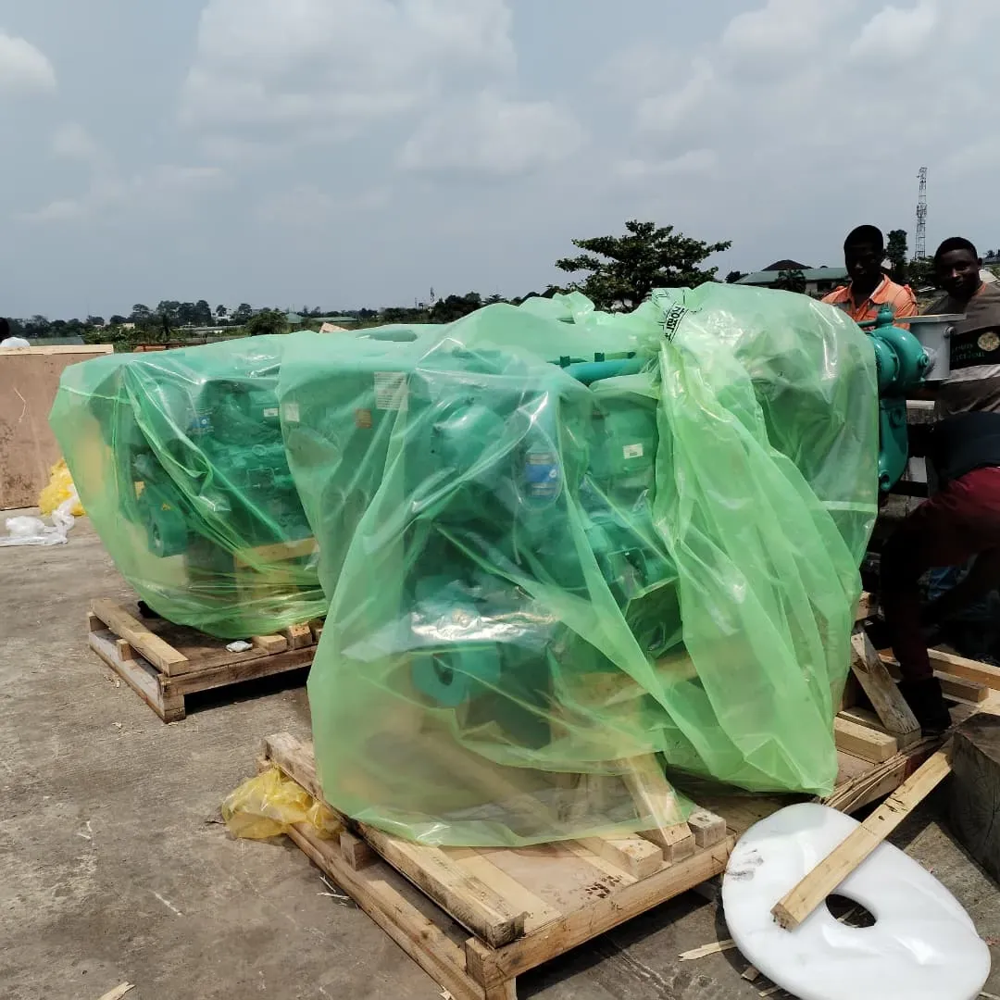
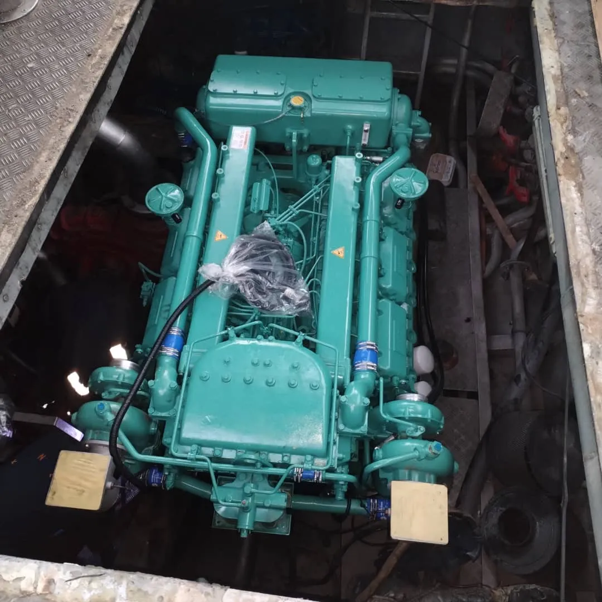
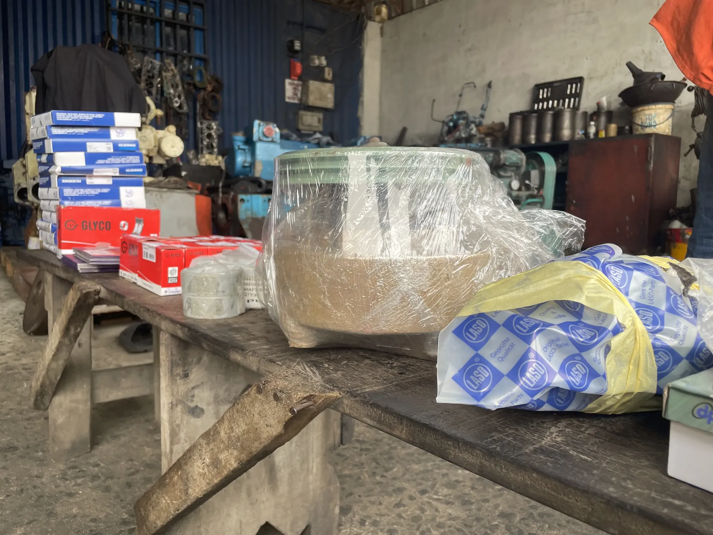

Our Services
Comprehensive marine and engineering support for vessel operations in Nigeria.
Marine Equipment Servicing
Marine equipment servicing encompasses the comprehensive maintenance, repair, and overhaul of critical shipboard machinery including main propulsion engines (port and starboard), auxiliary engines, deck engines, water pumps, heat exchangers, and alternators. This service is required when equipment reaches scheduled overhaul intervals, exhibits performance degradation, or experiences mechanical failures that cannot be resolved through routine maintenance alone.
Marine diesel engines operate under demanding conditions and accumulate wear on internal components over time. Industry standards and manufacturer guidelines typically recommend major servicing interventions based on running hours, with comprehensive overhauls commonly required after approximately 4,000 running hours of operation. Failure to perform timely overhauls can result in catastrophic engine failure, vessel downtime, expensive emergency repairs, and potential safety incidents. Our equipment servicing capability covers the full spectrum of intervention levels, from minor adjustments to complete engine rebuilds.
Types of Engine Overhaul
Top Overhaul
Top overhaul involves dismantling and servicing of cylinder heads, valves, valve seats, rocker arms, and camshaft components without disturbing the main crankcase assembly. This intervention addresses issues in the combustion chamber and valve train, including carbon buildup, valve wear, and cylinder head gasket failures. Cylinder head removal and inspection is a critical component of this process.
Partial Overhaul
Partial overhaul extends beyond the cylinder head to include work on selected pistons, piston rings, connecting rod bearings, and liner inspection, typically targeting specific cylinders exhibiting problems rather than overhauling the entire engine. This approach is used when localized wear or damage is identified through condition monitoring or performance analysis.
Major (Complete) Overhaul
Major or complete overhaul involves full dismantling of the engine, including removal and inspection of all pistons, piston rings, cylinder liners, connecting rods, crankshaft, main bearings, connecting rod bearings, camshaft, fuel injection equipment, and all gaskets and seals. All worn components are replaced or reconditioned, and the engine is reassembled to manufacturer specifications, effectively restoring it to near-original condition.



Typical Scope Includes:
- Pre-overhaul engine inspection and condition assessment
- Systematic dismantling and component documentation
- Measurement and inspection of all critical components
- Replacement of worn bearings, seals, gaskets, and filters
- Cylinder liner honing or replacement as required
- Valve grinding, seat reconditioning, and clearance adjustment
- Fuel injection pump and injector testing and calibration
- Reassembly to manufacturer torque specifications
- Post-overhaul testing, running-in, and performance verification
- Documentation of work performed and components replaced
Service Delivery: Workshop-based for removed engines and major components; vessel alongside for in-situ overhauls where engine removal is not practical.
Marine Engine Maintenance
Marine engine maintenance encompasses the systematic, scheduled servicing activities performed on main and auxiliary diesel engines to preserve operational reliability, prevent premature failures, and extend equipment service life. Unlike reactive servicing that responds to breakdowns, preventive maintenance follows a structured program of inspections, adjustments, lubrication, and minor component replacements carried out at predetermined intervals based on running hours or calendar time.
The operational importance of preventive maintenance cannot be overstated. Marine diesel engines represent significant capital investments and are critical to vessel operations. A well-executed maintenance program identifies developing problems before they escalate into costly failures, maintains engine efficiency and fuel economy, reduces the risk of unexpected breakdowns during operations, and extends the interval between major overhauls. Neglecting routine maintenance accelerates wear, increases the likelihood of catastrophic component failures, and can result in vessel downtime, emergency repair costs, and potential safety hazards. Regular maintenance also maintains engine warranty compliance and preserves asset value.
Our maintenance services follow manufacturer recommended schedules and industry best practices, with particular attention to critical wear points, lubrication systems, cooling systems, and fuel systems. We maintain detailed service records that track engine condition over time and enable predictive maintenance decisions based on actual equipment performance rather than arbitrary calendar intervals.



Typical Scope Includes:
- Regular oil and filter changes per manufacturer schedules
- Fuel system inspection, filter replacement, and water separator servicing
- Cooling system inspection, coolant testing, and heat exchanger cleaning
- Air filter inspection and replacement
- Belt tension checks and adjustment
- Valve clearance inspection and adjustment
- Turbocharger inspection and cleaning
- Starting system testing and battery maintenance
- Leakage checks and gasket inspection
- Performance monitoring and record keeping
Service Delivery: Vessel alongside or at berth; scheduled during planned maintenance windows to minimize operational disruption.
Generator & Power Systems
Generator and power systems services cover the maintenance, repair, and troubleshooting of auxiliary generators, power distribution equipment, switchboards, and electrical systems that provide shipboard electrical power. Reliable electrical power is essential for navigation equipment, communication systems, lighting, accommodation services, and operation of electrically driven machinery. Generator failures can compromise vessel safety and operational capability, making systematic maintenance and prompt repair capability critical.
Our services address both the mechanical aspects of generator sets (including diesel prime movers, cooling systems, and fuel systems) and the electrical components (alternators, voltage regulators, control panels, and distribution equipment). We perform scheduled maintenance to prevent failures, diagnose and repair faults when they occur, and conduct load testing to verify system capacity and performance. Electrical work is performed by qualified personnel familiar with marine electrical standards and safety requirements.



Typical Scope Includes:
- Scheduled maintenance of generator diesel engines
- Alternator inspection, testing, and servicing
- Voltage regulator testing and adjustment
- Control panel inspection and component testing
- Starting system maintenance and battery service
- Cooling system inspection and servicing
- Load testing and performance verification
- Fault diagnosis and repair of electrical issues
- Switchboard inspection and circuit breaker testing
- Emergency power system testing
Service Delivery: On-site at vessel location or workshop-based for component repair and overhaul; emergency response available for critical power system failures.
Marine Engine Installation
Marine engine installation services cover the complete process of fitting new or replacement diesel engines into vessels, including removal of old engines where applicable, preparation of engine beds and mounting arrangements, installation of new engines, alignment of couplings and drive systems, connection of fuel, cooling, exhaust, and electrical systems, and commissioning and sea trials. This service is required when vessels undergo repowering, when existing engines have reached the end of their economic service life, or when engine damage renders repair uneconomical.



Typical Scope Includes:
- Pre-installation survey and planning
- Removal of existing engine if applicable
- Engine bed preparation and alignment checks
- New engine installation and securing
- Shaft alignment and coupling installation
- Systems connection (fuel, cooling, exhaust, electrical)
- Commissioning and testing
Service Delivery: Vessel alongside or in dry dock; project duration dependent on vessel size and installation complexity.
Marine/Industrial Equipment Procurement & Supply
Marine and industrial equipment procurement and supply services provide vessel operators and marine companies with reliable access to genuine spare parts, consumables, and technical equipment required for maintenance, repair, and operational support. Sourcing the correct parts in a timely manner is often a critical challenge in marine operations, where incorrect or substandard components can lead to equipment failures, extended downtime, and safety risks. Our procurement service leverages established supplier relationships and local market knowledge to source quality parts efficiently.
We handle the complete procurement process including identification of correct part specifications, sourcing from reputable suppliers, quality verification, logistics coordination, and delivery to the point of use. Our service covers engine spare parts (pistons, bearings, gaskets, filters, injectors), electrical components, pumps and valves, deck equipment, consumables (oils, coolants, chemicals), and miscellaneous hardware and tools. We maintain awareness of lead times and stock availability to advise clients on realistic delivery schedules and can expedite urgent requirements where possible.



Typical Scope Includes:
- Identification of correct part numbers and specifications
- Sourcing from authorized dealers and reliable suppliers
- Price quotation and lead time confirmation
- Quality verification and authenticity checks
- Procurement processing and order tracking
- Coordination of logistics and delivery
- Documentation and invoicing
- Technical advice on part selection and alternatives
- Urgent sourcing for critical breakdowns
Service Delivery: Parts supplied to vessel location, workshop facility, or client-specified delivery point; lead times dependent on part availability and supplier location.
Routine Inspection & Preventive Maintenance
Routine inspection and preventive maintenance programs provide scheduled, systematic examination of vessel machinery, equipment, and systems to identify wear, deterioration, or developing problems before they result in failures or operational disruptions. These services complement equipment-specific maintenance by providing broader oversight of vessel condition, enabling proactive intervention, and supporting regulatory compliance and classification society requirements.
Typical Scope Includes:
- Scheduled machinery inspections per maintenance plans
- Visual examination of equipment condition
- Performance monitoring and data recording
- Identification of required maintenance actions
- Lubrication schedules and execution
- Minor adjustments and preventive interventions
- Maintenance record keeping and reporting
Service Delivery: Vessel alongside or operational; scheduled according to client maintenance plans and equipment running hours.
Mechanical & Technical Support
Mechanical and technical support services provide on-site technical assistance, fabrication support, and mechanical repair work for situations that fall outside routine maintenance programs or require specialized skills and equipment. This service addresses unexpected breakdowns, emergency repairs, modification work, and technical problem-solving requirements that vessel crews may not be equipped to handle independently.
Typical Scope Includes:
- Emergency breakdown response and troubleshooting
- On-site mechanical repairs
- Welding and fabrication support
- Pipe work modification and repair
- Equipment rigging and lifting assistance
- Technical problem diagnosis
- Temporary repairs and operational support
Service Delivery: On-site at vessel location or client facility; response time dependent on location and equipment availability.
Manpower Supply & Management
Manpower supply and management services provide clients with access to trained and experienced marine technicians, engineers, and support personnel for temporary assignments, project work, or ongoing operational support. This service enables clients to augment their technical capabilities during peak workload periods, major projects, or when specialized skills are required without maintaining permanent staff for these functions.
Typical Scope Includes:
- Supply of qualified marine technicians and engineers
- Personnel screening and competency verification
- Coordination of work assignments and schedules
- Management of supplied personnel
- Safety compliance and supervision
- Performance monitoring and quality assurance
- Administrative handling and documentation
Service Delivery: Personnel deployed to client vessels, facilities, or project sites; assignment duration from short-term to extended contracts as required.
Engineering Brands We Are Familiar With


Discuss Your Technical Requirements
Get in touch to discuss how we can support your operations or to request further details about any of our services.
Contact Us